因为在这暴力的时代他与我们共存
让我们不会幻想他在其他任何地方
除了我们死去的地方
我们不能慌张
我们要在他面前表现出耐心
让我们直面耶稣
那个从十字架召唤我们的人
因为他就像东边的黎明
始终与我们共存
让我们谨记
他曾流出的鲜血
让我们折断面包
让我们举起圣杯独饮
让我们感谢那个牺牲掉自己的人
那个至始至终爱着我们的人
——《人神之间》
10月1日在拉斯维加斯暴发美国史上死伤最惨重的枪击事件，造成至少59人死亡，527人受伤，美国降半旗致哀，之后IS宣称对此次恐怖袭击负责，如此惨剧，让全世界的人都感到悲伤和震惊，但同时这场惨剧也是对欧美世俗化发出的警钟，过去坚信“那杀身体的，不能杀灵魂”的坚定信仰如今渐渐丢失，面对不惧死亡的“圣战”恐怖分子，欧美国家显得措手不及，而越来越“自由化”和空虚无聊的生活，让许多欧美的年轻人加入到了极端组织，世俗化是无法与极端宗教势力对抗的，因为他们不怕死，而世俗化把享乐的身体当作了追求的全部，苦难对于他们来说是无法承受的，他们必须要重新回到古旧的福音中去寻回信仰。
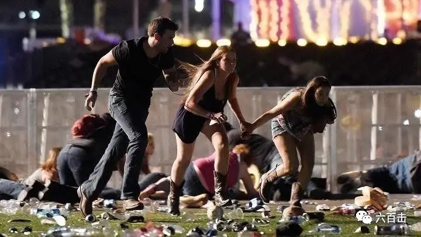
今天是中秋节，我怀着崇敬的心向大家推荐一部电影——《人与神》，一部关于基督徒、伊斯兰教徒以及极端伊斯兰之间的故事，本片曾获得第63届戛纳电影节评审团大奖，所描写的是一起真实的事件，这起事件发生于1996年的阿尔及利亚，一所修道院中的修道士与当地伊斯兰教徒和谐共处，但是在一个晚上，他们被一群极端分子带走，两个月后，发现了他们的尸体，他们究竟是被极端分子杀害，还是被当地军政府军队杀害，至今仍然是一个谜。
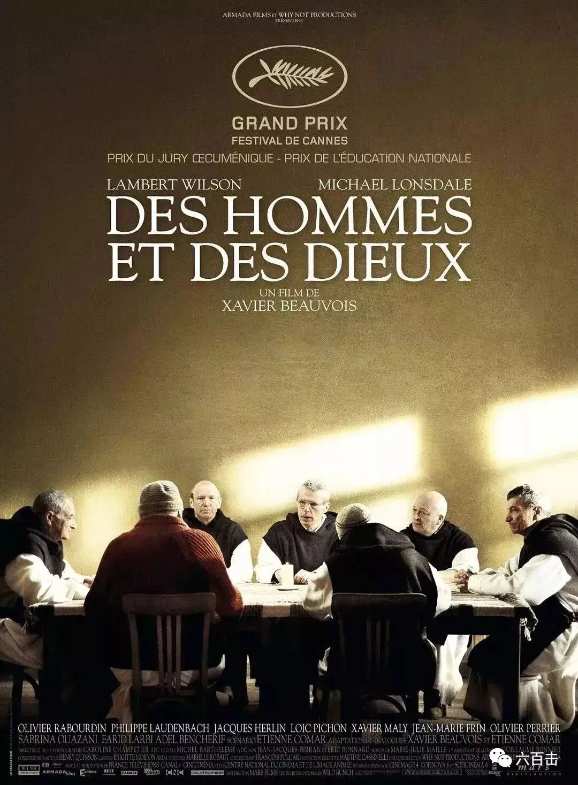
而改编的电影更让我无数次落泪，不是被煽情的落泪，而是为这八位修道士在信仰里的平安而感动落泪，这部电影的成功之处在于将面对恐怖袭击的威胁，提升到人与神之间的张力之中，不是简单的趋利避害，而是要不要效法耶稣，更加可贵的是，这种“神性”并不是符号化的，而是坚实的建立在人性的软弱之上，所以电影给人的感觉异常真实，并且能够带我们进入信仰的平安之中。电影没有说教，情节也比较淡化，因为涉及伊斯兰教的敏感问题，导演很聪明的避开了这些雷区，将镜头对准了八位修道士面对恐怖主义威胁时纠结的内心世界，电影表达冷静节制，摄影、表演力求质朴、真实，整部电影散发着一股鼓舞人心的力量，让我们一起来跟着这八位修道士一起来面对恐怖主义和极端分子，你一定会最终发现我们真正需要的东西，不是应该不应该持枪，不是更加缜密的安防，甚至不是民主，而是那能够战胜死亡的信仰。
因为情节上的淡化，电影中有很多的镜头都在描述他们的祷告和敬拜，而这些祷告词和诗歌又与情节紧紧呼应，我特意将祷告词摘录出来，希望在这个中秋，我们可以一起随着电影，一边敬拜，一边感受，这部电影真的很美。
《人神之间》预告片
01 我们和穆斯林是朋友
电影中伊斯兰教徒和修道士之间是和睦的，当地居民生活艰辛，常年在生活上、医疗上仰赖修道院的帮助，修道士们也热心的服侍当地的居民，并没有强行的传教或者急切的改变当地人的信仰，双方都是在互相尊重的基础上相处，修道院成为了当地人的医院，每天都有很多人排队看病。
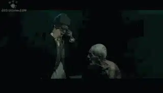
修道士年纪都比较大
他们的生活也相当简单和规律
做饭、劈材、更衣、打扫、种菜、祷告、敬拜
他们唱诗的声音非常好听
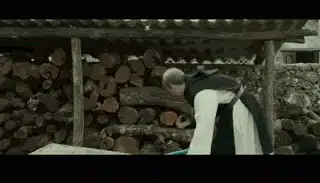
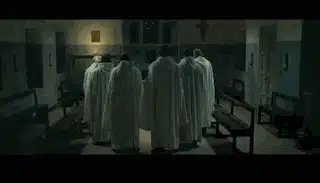
在一阵平和的生活中
电视中的一则新闻放出了危险的信号
一位在法国读书的女孩因为在外面没有佩戴面纱
而被自己的家人用刀刺死
这让当地的穆斯林非常不理解
古兰经不是教导不可杀人么？
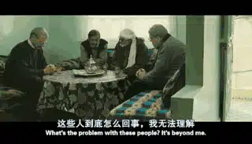
02 极端伊斯兰
一场突如其来的大屠杀降临
极端伊斯兰用残忍的割喉杀害了很多克罗地人
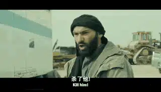
这引起了当地人及修道士的恐慌
当地政府要派军人保护修道院
但是被主事的克里斯汀拒绝
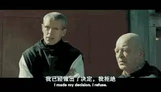
显然，其他修道士心有异议
克里斯汀问大家，
哪些人希望看到军队驻扎在修道院中
“
我们是被召唤而来的
与那些同样担惊受怕的人们一起
住在这个国家
我们只能与不可预知的未来存活
”
修道士们克制着自己的恐惧
继续过着以往的生活
导演虽然没有直接表现他们的恐惧
但是通过他们祷告和唱诗的内容很自然的流露出他们真实的挣扎
03 第一次“短兵相见”
在庆祝耶稣降生的圣诞节夜晚，忽然，极端分子闯入了修道院
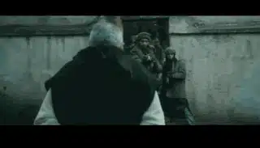
原来，他们的同伴受伤了
头目带领自己的人来到修道院
要求带走擅长医疗的修道士
克里斯汀勇敢的说“修道院不允许带入武器”
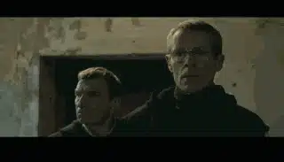
而头目争锋相对，“我武器从不离身”
于是克里斯汀带他们去修道院外面谈
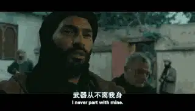
克里斯汀不卑不亢的告诉他们
我们负责医疗的修道士不可能跟着你们走
因为他年纪老迈而且有哮喘
正当头目有所迟疑的时候
克里斯汀通过古兰经讲述了修道士们的友好立场
“
你知道古兰经吧
那些爱着信者的人
是那些自称为基督徒的人
他们都是些祭司和僧侣
而他们并不因此骄傲
这就是为什么我们与邻里乡亲们都很亲近
”
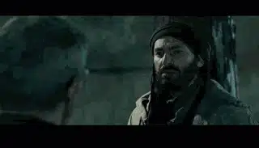
让人惊奇的是，这个极端分子并非像我们通常所听闻的，二话不说就爆炸，他很耐心的听了克里斯汀的言论，并打算带队撤退，这时克里斯汀告诉他今晚非常特别，是圣诞节，言外之意就是说你们的到来破坏了这个神圣的节日。
克里斯汀的勇敢表达没有得到极端分子的子弹
反而意外的收获了道歉
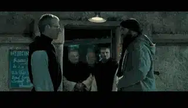
极端分子离开后，八位修道士平安的完成了圣诞节的敬拜
“
除了爱
什么都是不存在的
除了这些刚要萌芽的爱
除了分离沙和水
神将地球当做了摇篮
他将从天而降
就在今晚
巴勒斯坦的快乐之夜
除了这个新生的孩子
什么都是不存在的
除了这个具有神圣生命的孩子
通过取走我们的肉体
神让我们的沙漠重焕生命
并让土地获得永恒青春
就在今夜
我们不断摸索的漫长之夜
除了这里 什么都是不存在的
除了这个希望被摧毁的地方
通过阻止我们的等待
神做出了预示
怒火将至的世界
”
04 遭人猜忌
一天，恐怖分子带着受伤的同伙来到修道院，修道士救了他的性命
修道士救助恐怖分子的事情很快就转开了，其他人无法理解他们为什么要拯救十恶不赦的恐怖分子。
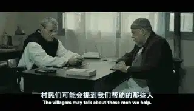
这尤其是引起了当地军人的强烈反感
他们怀疑这些修道士包庇极端分子
有一天，军官带克里斯汀去认领一具尸体
一个被他们抓到后虐杀的恐怖分子
问克里斯汀这个人是不是被你们医治过
克里斯汀不仅承认了，而且还为他祷告
这更是激起了军官对他的仇恨
“你对恐怖分子太仁慈了”
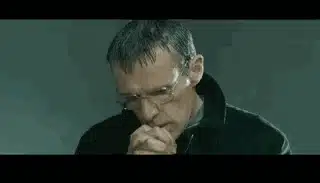
05 去或留
情势越来越危险，他们当中有几个人想要离开这个危险的地方
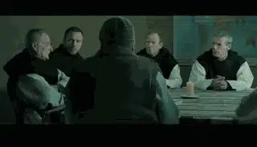
而当地人却把他们看作保护伞
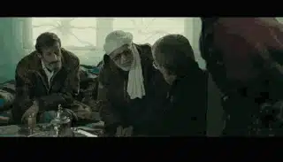
居民说，
“我们才是树梢上的鸟，
你们就是树梢，如果你们离开
鸟儿就没有了栖身之所”
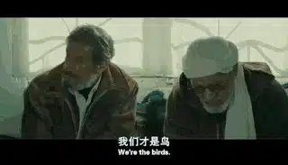
这些都使每一个修道士处于挣扎之中
而在表现挣扎上本片有着伟大电影的克制
没有去过份的渲染
不论是在修道院还是在其他居民的家中
光线、摄影处理的都力求真实、质朴，
而演员低调节制的表演更加增强了这种真实感
都使电影充满了感染力
其中一人面对威胁，充满了疑惑
“
我尝试祷告
但是什么也听不见
我不明白
为什么要成为殉道者
为了上帝？
为了成为一个英雄？
为了证明我们是伟大的？
”
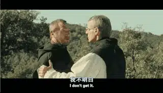
面对这次挑战每个人都有真实的软弱
“
接受我们的软弱和贫穷
是一种邀请，一次呼召
关系并不是建立于权利之上
认清我们自己的，并也接受他人的软弱，
我能够忍受他们，让他们成为自己的
这是对基督的一种仿效
这种态度改变了我们的使命
软弱本身并不是一种美德
而是一种对现实的表达
这种表达需要不停的被信仰，希望和爱改变
传道者的软弱就像基督的
根植在神秘的东方
根植在灵魂的力量深处
这既不是一种被动
也不是一种顺从
它需要一个人具备诺大的勇气
它激励一个人保卫正义和真相
并抵抗力量和权利的诱惑
”
内心纠结的克里斯汀独自在默想信仰
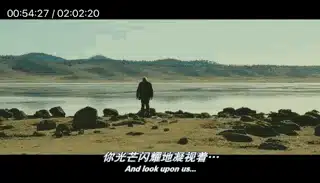
电影没有通过彼此说教来解决这个问题
而是让每个人去面对这个选择
让每个人去面对上帝
去或留表面上看是面对危险的抉择
更深的是你是否要选择效仿耶稣
所以片名叫“人神之间”
并不仅仅是人本的看待这个问题
而是要跨过人性进入神性
用神的眼光去看待这个处境
“
就像已经干涸的地球
我站在你面前，我的主
我的主，请倾听我的祷告
倾听我祈求宽恕的哭声
作为你最忠实的仆人，请回答我
请不要对你的仆人 有偏见
因为在你面前，没人是公正的
敌人正在迫害我的灵魂
他已经将我的生命重击在地
他让我迷失在黑暗之中
与那些漫长的死亡困在一起
我体内的灵魂逐渐枯萎
快快回应我
我的灵魂正在枯萎
不要在我面前藏起你的面容
以免我像那些坠入深渊的人
”
摸着“马上要上十字架的耶稣画像” 默想的修道士
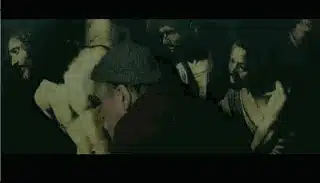
06 最后的晚餐
经历了默想、敬拜和彼此鼓励
大家决意要一同面对患难
就让上帝来安排这一切吧
让上帝来安排我们的朋友和敌人
大家最后拍了一张合影
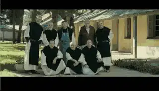
军用飞机呼啸在天上
修道士们安静的祈祷
我真的看到了圣徒相通
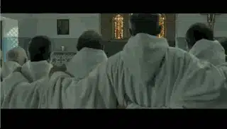
大家一起领了最后的圣餐
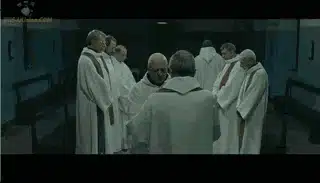
一起享用了最后的晚餐
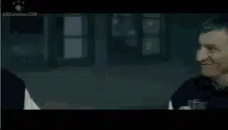
晚餐上八人的特写镜头充满了抒情和平安
是一种沐浴在基督爱中的喜乐
看着他们脸上的皱纹和微笑
就有一种信仰而来的温暖
“
野花不会为了寻找阳光而移动
只因上帝的照料让它们不管在哪儿
都能够丰饶美丽
”

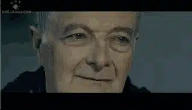

07 消失在远方
修道士最终被极端分子带走
电影并没有直接去表现他们的死亡
他们是被极端分子杀害还是由军政府杀害已经不重要
雪天中
极端分子带着修道士慢慢的走向镜头深处
在别人看来
修道士是一种幼稚，是自找的死亡
他们应该抛弃当地人，很机智的远离恐怖袭击
但是对于他们来说
仿佛走向了天堂
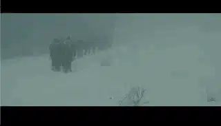
克里斯汀写的旁白祷告缓缓流出
“
如果这真的降临在我们的身上
而且可能就在今晚
成为一个吞噬所有外国人的恐怖分子团体的受害者
我希望我的团体
我的教会
我的家人
能够记得我的身体是由上帝，由国家给予的
记得万物之王
对这一次残酷的离别
并不感到惊奇
而我的死亡 就像其他所有暴力之死一样
将会被冷漠地遗忘
我已经经历了足够来认识和看清那些战胜世界的恶魔的同谋
而恶魔则极其轻率地把我给击败了
我永远不会渴求这样的死亡
我永远也不会感到欣慰
因我爱的那些人们
被胡乱指控谋杀我的罪
我知道这个国家对这里的人的轻视是无差别的
我还知道某些伊斯兰教徒是如何扭曲 伊斯兰教的
这个国家 以及伊斯兰教，之于我是与众不同的
他们是身躯和灵魂
而我的死亡，当然会很快成为那些说我幼稚的人的证明
那些说我理想化的人
但他们必须要清楚，我从我灼热的好奇心中被释放出来了
我将沉浸在 天父对我的凝视中
当他注视着，伊斯兰的子民们时
我将与他一起沉思
这个包含了我整个人生的感谢
当然包括你
昔日和今日的友人
还有你，不知道自己在干嘛的
最后一分钟的朋友
是的，我也要对你说
我想要做出感谢
当然也是永别
希望凭此，能让我们在快乐的天堂 再次相见
求求你了，上帝
阿们
”
关注并回复： 人与神 获取电影资源
这里没有挑逗你眼目情欲的小鲜肉，也没有挑动你肉体情欲的段子
更没有膨胀你今生骄傲的鸡血。
我们只在乎那些最质朴真诚的作品，在那里我们才能恢复真正的想象力
我们也坚信这才是我们真正需要的。

个人微信号：six_hundreds_hits
因苹果公司规定，微信iOS 版赞赏功能关闭
如对本文表示支持，苹果设备用户可通过以下微信二维码赞赏